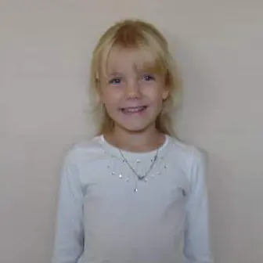
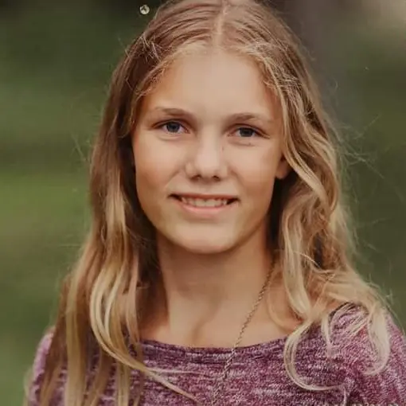
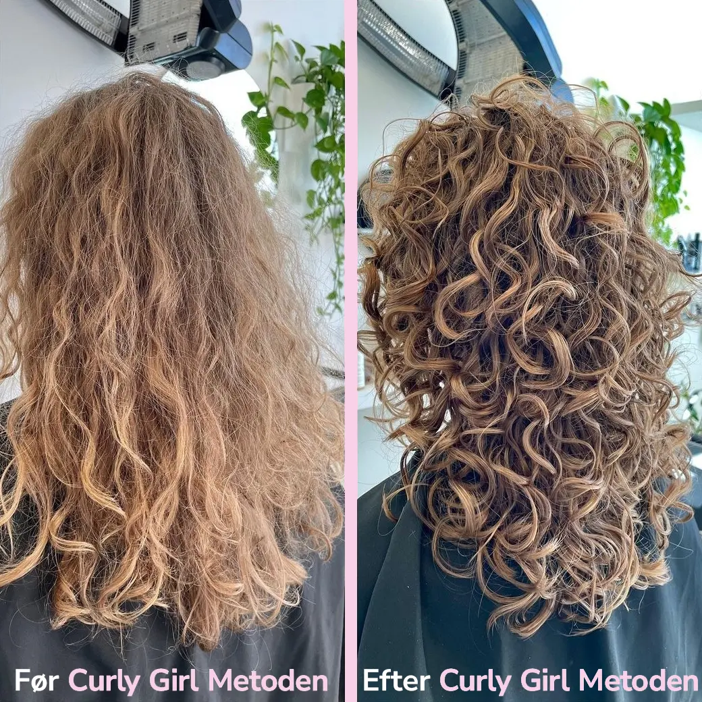

Som barn havde jeg altid helt glat, lyst og meget meget tyndt hår. Alle kvinder i min familie har meget kort og tyndt hår, og sådan har det altid været, så det var ikke så mærkeligt mit hår var på samme måde.
I løbet af min opvækst blev mit hår længere og tykkere, men forblev glat og lysebrunt. Jeg har ikke som sådan førhen gået op i mit hår da der ikke var så meget at gøre med det. Jeg har altid bare haft løst hår uden nogle former for styling eller opsætning.
Omkring 7 klasse begyndte mit hår at ”puffe” op, og blive stort og uhåndterbart hver gang jeg børstede det og jeg anede ikke hvad jeg skulle gøre med det, så jeg satte det altid op i hestehale eller glattede det hver dag. Der gik mange år med dette hvilket skade mit hår utrolig meget med alt det varme, det fik aldrig en pause fra glattejern eller hårelastikker, og selv når jeg havde håret oppe fik jeg altid en lille ”krone” af frizzy hår rundt om hovedet som jeg hadede. For at bekæmpe denne frizz begyndte jeg også at bruge hårspray hvilket ikke hjalp mit skadede hår.
Det var først da jeg kom på efterskole at jeg virkelig ikke gad at kæmpe med at glatte håret hver dag, så her fik det bare lov at være helt sig selv, og så skal jeg love for krøllerne begyndte at vise sig meget hurtigt, det startede egentlig som meget definerede bølger og sådan var det resten af efterskole året.
Da jeg startede i 1.g i 2017 gik jeg ned i matas og spurgte hvad jeg skulle stille op hvor de forslog mig en række produkter til krøllet hår. Det var ikke Curly Girl Metoden produkter da den ikke var så udbredt endnu, men de hjalp! Jeg gik fra bølget hår til rent faktisk at have krøller.
I 2021 tog jeg til en Curly Girl Frisør og blev sat ind i metoden, hvor jeg fik en masse tips og tricks oveni, siden da har jeg holdt mig til dem og mit har har aldrig været flottere eller sundere. Så for mig har Curly Girl Metoden helt klart været en stor hjælp.
Er du nysgerrig på om du også har krøller?
Tag testen her